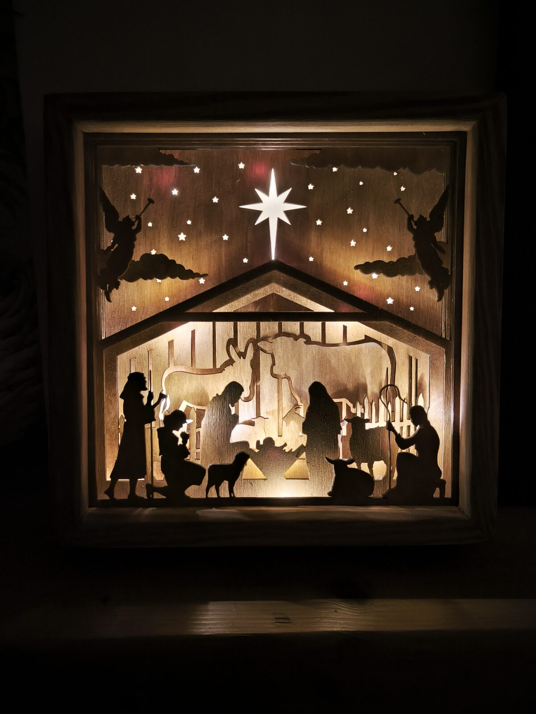
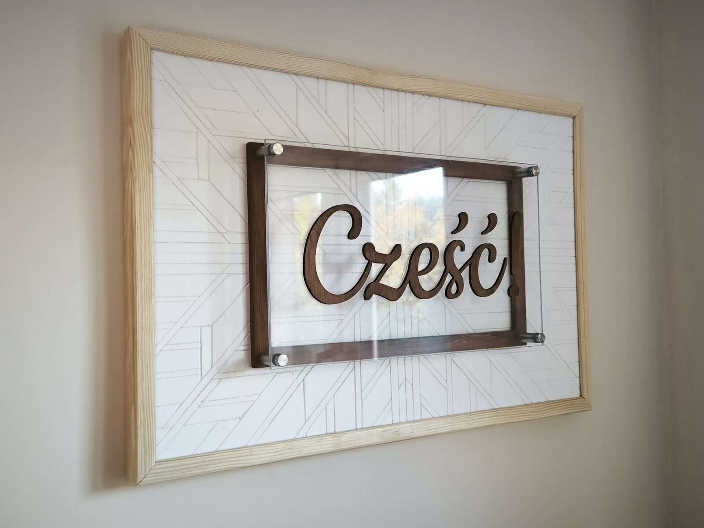
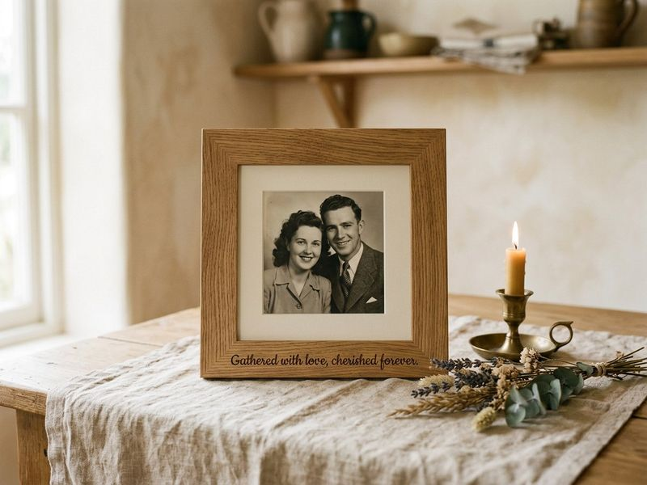

Dekoracje świąteczne
Szopka warstwowa z podświetleniem
Nasz flagowy produkt: ręcznie cięte warstwy sklejki 20×20 cm, ciepłe światło LED 2700 K, rama z wpustami i listwą sosnową.
Pokazujemy, z czego i jak powstają nasze rzeczy. Każda realizacja to deska, światło i detal — od projektu do ostatniego szlifu.

Nasz flagowy produkt: ręcznie cięte warstwy sklejki 20×20 cm, ciepłe światło LED 2700 K, rama z wpustami i listwą sosnową.

Drewniany szyld z grawerem — wita gości w domu, na weselu i w lokalu.

Ramka ze sklejki z wybraną sentencją, imionami i datą — prezent, który zostaje.
Wersja robocza portfolio. Docelowo realizacje (zdjęcia, opisy, kategorie) będziesz dodawać w panelu /admin/ — tak jak produkty sklepu.